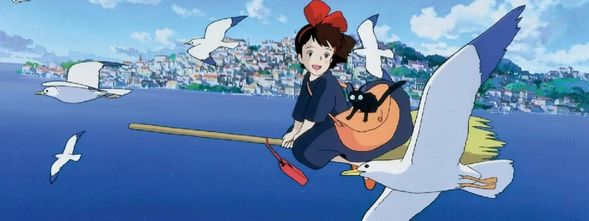

推荐作品 - 《魔女宅急便》


《魔女宅急便》（魔女の宅急便）是吉卜力工作室以角野荣子的同名小说为蓝本改编的动画电影，也是首部由吉卜力工作室与华特迪士尼公司合作发行的动画电影。由宫崎骏担任导演，高山南、佐久间丽、山口胜平、户田惠子、信泽三惠子主演。《魔女宅急便》讲述的是魔法少女琪琪离开家进行独立修行的经历。这部电影描绘出日本一般青春期女孩在希望独立与自力更生所面临的困境。
魔法少女一旦到了13岁就必须离开家进行为期一年的独立修行，琪琪也不例外。她带着黑猫吉吉来到一个靠海的大城市中，可是谁都不搭理她。沮丧的琪琪偶然替别人送去一件遗失品，从而获得了面包店老板娘的好感。在她的帮助下，琪琪利用自己的飞行魔法开始了快递业务。渐渐地，琪琪习惯了新的环境，工作也进行得很顺利，她结识不少新朋友。一个热衷于制造飞机的男孩“蜻蜓”邀请琪琪参加飞行俱乐部的聚会。在聚会当天，琪琪为了帮助一位老夫人送东西而没有去成，并在雨中得了感冒。琪琪突然发现自己的魔法能力正在削弱。好友乌尔斯拉邀请情绪低落的琪琪去自己家玩，在她的安慰下琪琪又恢复了自信。电视里播出“蜻蜓”开飞机试飞遇险的新闻，琪琪骑上拖把奋力飞往出事地点，成功救下“蜻蜓”。
《魔女宅急便》就是一部清新可人的成长小说。微微倦怠的天气里看一看，就觉得心中的层层叠叠的惆怅与阴霾散去。那个坚强的小魔女，能给人无限的力量。有人说，宫崎骏有女孩情结，这话不假，他的每一部片子几乎都是女孩为主角，从风之谷到前几年的哈尔的移动城堡，每个故事都是有关女孩的。而这一部是同样的，以纯真无邪的女孩为主角，唱出了一首“关于飞行的挽歌”。
 琪琪
琪琪
蜻蜓
 乌露丝拉
乌露丝拉
吉吉